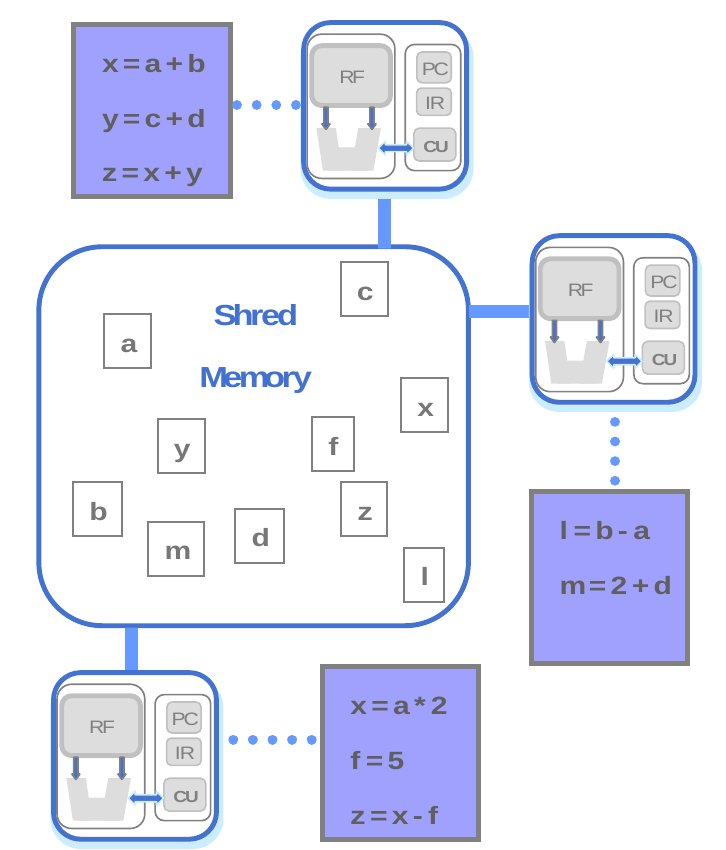
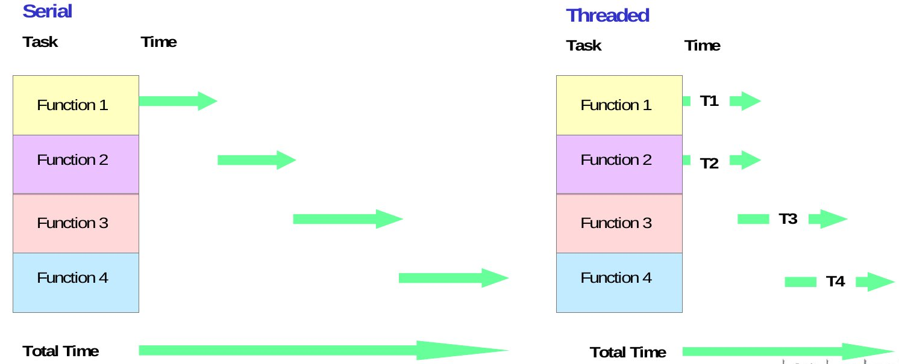
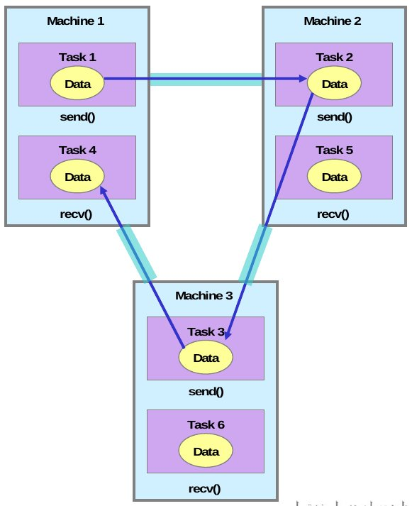
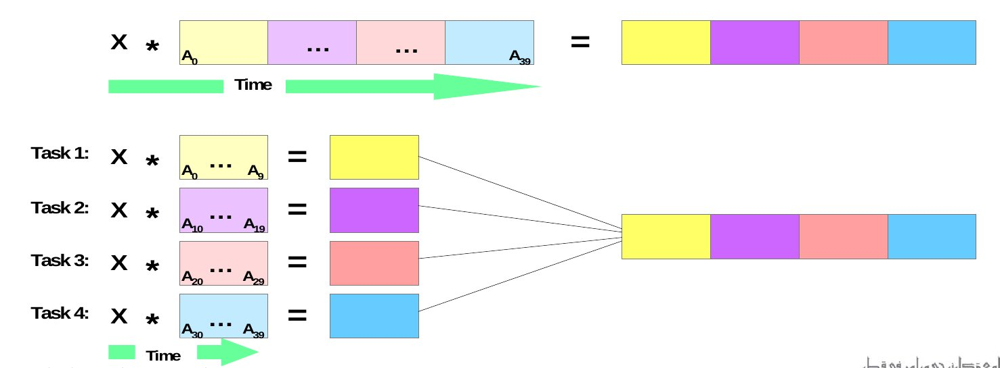
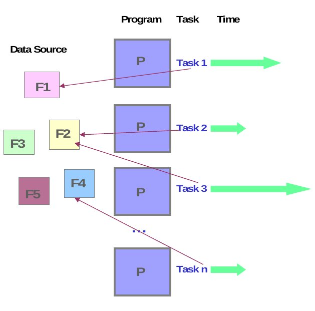
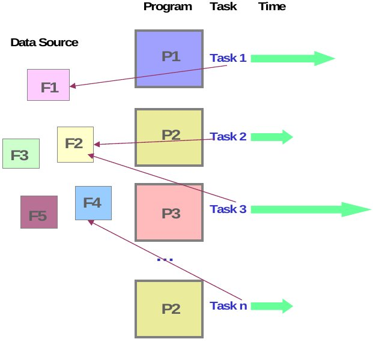

并行计算编程模型
并行编程模型是并行计算，尤其是并行软件的基础，也是并行硬件系统的导向.并行编程模型是在硬件和内存体系结构层之上的抽象概念。通用的并行编程模型：
－ 共享存储模型(Shared Memory Model)
－ 线程模型(Threads Model)
－ 消息传递模型(Message Passing Model)
－ 数据并行模型(Data Parallel Model)
其它:
－ 单程序多数据型(SPMD)
－ 多程序多数据型(MPMD)
共享存储模型(Shared Memory Model)
在共享编程模型中，任务共享统一的可以异步读写的地址空间。通过如lock，semaphore等机制来控制共享数据冲突。
共享存储模型的优点是对于程序员来说数据没有身份的区分，不需要特别清楚任务简单数据通信。程序开发也相应的得以简化。
共享存储模型的在性能上有个很突出的缺点是很难理解和管理数据的本地性问题。处理器自己的缓冲区中使用数据，使用完毕后刷新缓存写入内存，此时可能发生多个处理器使用相同数据的总线冲突。不幸的是，一般用户很难理解或控制数据的本地化问题。
在共享内存平台上，本地的编译器将会把用户程序变量转换到全局地址空间中。现在市面上还没有一般的分布式内存平台的实现。然而，先前在我们概览部分提到的KSR，它就是在分布式的机器上提供了一个共享的数据平台。
线程模型(Threads Model)
在并行编程的线程模型中，单个处理器可以有多个并行的执行路径。
线程模型的构成如下：
- 操作系统调度主程序a.out开始运行，a.out加载所有必要 的系统资源和用户资源开始执行。
- a.out完成一些串行工作，然后创建一些可以被操作系统调度的并行任务(线程)去执行。
- 每次线程都有自己的数据，而且共享整个a.out的资源。这样就节省了拷贝程序资源给每个线程的开销。这样线程之间可以并行执行子程序。
- 线程之间通过全局内存进行通信。这个需要同步构造来确保多个线程不会同时更新同一块全局内存。
- 线程执行完了就自动销毁，但是主程序a.out在应用程序完成之前一直存在，维护必要的共享资源。
- 线程通常和共享内存体系结构和操作系统相关。
实现：
从程序的角度出发，线程的实现通常包括：
1)并行代码需要调用的子程序库；
2)串行或者并行源代码中的一套编译器指令。
-在以上两部分中，程序员都要负责制定所有的并行机制。
-线程的实现并不是什么新技术，硬件供应商已经实现了他们自己的线程版本。线程的实现机制本质上的不同使得程序员很难开发出可以移植的多线程应用程序。
-不同的标准产生了两个不同的线程实现方式：POSIX线程和OpenMP
POSIX线程：
-基于库函数的，需要并行编码。
-IEEE POSIX 1003.1c 中有具体描述。
-只适用于C语言
-通常是指Pthreads
-大多数的硬件供应商现在为自己的线程实现加入Pthreads
-十分清晰的并行，需要程序员特别关注实现的细节。
OpenMP：
-基于编译器指令，可以使用串行代码。
-有一群计算机软硬件厂商共同定义并支持。OpenMP在1997年完成Fortran的API，于1998年完成C/C++的API
-简洁而且跨平台(Unix、Windows NT)
-有C/C++和Fortran的实现
-使用简单，支持增量并行
- 微软有自己一套独立的线程实现机制，与以上两者都不相关。
-更多信息
POSIX的教程computing.llnl.gov/tutorials/pthreads
OpenMP的教程computing.llnl.gov/tutorials/openMP
消息传递模型(Message Passing Model)
消息传递模型有以下三个特征：1) 计算时任务集可以用他们自己的内存。多任务可以在相同的物理处理器上，同时可以访问任意数量的处理器。
2) 任务之间通过接收和发送消息来进行数据通信。
3) 数据传输通常需要每个处理器协调操作来完成。例如，发送操作有一个接受操作来配合。

实现
从编程的角度上来看，消息传递的实现通常由源代码中的子程序库构成。程序员负责决定所有的并行机制。
1980年以来出现了大量的消息传递机制的库函数。这些实现本质上是不同的，这就加大了程序员开发可移植的应用程序的难度。
1992年，建立了MPI讨论组，他们的首要目标就是建立消息传递实现的标准接口。
消息传递接口(MPI)的第一部分于1994年完成，第二部分完成于1996年。两部分MPI规范都可以在这里下载http://www-unix.mcs.anl.gov/mpi/。
MPI现在已经成为了工业界消息传递的标准了，并且代替了市面上几乎所有的其他的实现方法。大多数比较流行的并行计算机都至少实现MPI的一个标准，有些还完全满足标准2。
对于共享内存体系结构，MPI的实现通常不使用网络来进行任务间的通信。替代的办法是利用共享内存来进行通信，这样可以提高性能。
更多信息：
MPI的教程computing.llnl.gov/tutorials/mpi；
数据并行模型(Data Parallel Model)
数据并行模型有以下特性：并行工作主要是操纵数据集。数据集一般都是像数组一样典型的通用的数据结构。
任务集都使用相同的数据结构，但是，每个任务都有自己的数据。
每个任务的工作都是相同的，例如，给每个数组元素加4。
在共享内存体系结构上，所有的任务都是在全局存储空间中访问数据。在分布式存储体系结构上数据都是从任务的本地存储空间中分离出来的。

实现 使用数据并行模型编程通常都是用构造并行的数据来写程序。构造方法是调用并行数据的子函数库，然后数据并行编译器就可以识别构造时用到的编译器指令。
Fortran90和95：ISO/ANSI标准扩展于Fortran77：
包含Fortran77中的所有东西；加入新的代码格式；添加新的特性集；增加程序结构和命令；增加函数、参数等变量；添加数组处理；增加新的递归函数和内部函数；和很多其他的新特性。大多数通用的并行平台都可以使用。
编译器指令：可以让程序员指定数据的排列和分布。针对大多数的通用并行平台都有Fortran的实现。
分布式内存模型的实现是用编译器将程序转换成标准的代码，这些代码通过调用MPI库函数来将数据分配给所有的进程。所有的消息传递对于程序员来说是不可见的。
其他模型
上面提到的并行编程模型都是已经存在，而且会随着计算机软硬件的发展继续进化。除了这些之外这里还有三个更为通用的模型。混合型：
这个模型中，是由两个或多个模型组合在一起实现的。
当前通用的混合模型的例子就是：由消息传递模型(MPI)和线程模型(POSIX)或者共享内存模型(OpenMP)组成而成。
混合模型中其他比较通用的模型是：将数据并行和消息传递组成起来。正如我们上面在数据并行模型部分提到的那样，在分布式体系结构上实现数据并行模型实际上是用消息传递的方法来为任务间传递数据的，对程序员是透明的。
单程序多数据型(SPMD)
SPMD实际上是一个高层次的编程模型，是在前面提到的并行编程模型基础之上构建的。一段程序可以被所有的任务同时的执行。
任务可以同时执行同一个程序中的相同或不同指令。
SPMD程序通常都包含必要的逻辑，使得任务可以有条件的或者分叉的执行那些可以被执行的程序。所以任务没有必要去执行整个程序，很可能只执行一小块程序就可以了。
所有的任务可能使用不同的数据。

多程序多数据型(MPMD)
与SPMD类似，MPMD也是高层次编程模型，建立在上面提到的并行编程模型之上。MPMD应用程序多个执行程序。当程序并行执行时，每个任务可以执行相同或不同的程序作为自己的工作。所有的程序可能使用不同的数据。

小结
模型并不是为了某一个特定的机器或内存体系结构而设计的。事实上，这些模型都可以在硬件层之下实现，两个例子：－ 分布式内存机器上的共享内存模型：Kendall Square Research (KSR) ALLCACHE approach。机器的内存物理上的实现是分布式内存，但是对用户来说是一个单一的全局地址空间。一般来说，这种方法叫做虚拟共享内存。注意：尽管KSR不再应用于商务贸易方面，但是不代表其他的供应商以后不会再利用这种方式。
－ 共享内存机器上的消息传递模型：MPI on SGI Origin。SGI Origin 使用 CC-NUMA类型的共享内存体系结构，这种体系结构可以使得每个任务都可以直接访问全局内存。然而，MPI发送和接受消息的功能，就像通常在网络上实现的分布式内存机器一样，实现方法相似，还十分通用。
要使用哪个模型通常取决于可以获得哪个模型和个人的选择。尽管现在有模型相对于其他的来说确实有更好的实现方法，但是这里没有“最好”的模型。
并行程序设计关键问题
- 自动化 vs. 手工并行化(Automatic vs. Manual Parallelization)- 问题可否被并行化(Can the Problem be parallelized?)
- 问题分解(Partitioning)
- 通信(Communications)
- 同步(Synchronization)
- 数据依赖(Data Dependencies)
- 负载平衡(Load Balancing)
- 粒度(Granularity)
- 输入输出(Input/Output)
自动化 vs. 手工并行化(Automatic vs. Manual Parallelization)
设计和开发并行程序是典型的人为设计的过程。程序员负责识别并行性和实现并行机制。通常，手工开发并行代码是一件费时、复杂、容易出错和迭代的过程。
这些年以来，开发出多种工具帮助程序员吧串行的程序转换成并行的程序。最通用的工具类型是并行化编译器或预编译器，它们可以自动把串行化程序并行化。
并行化编译器通常有以下两种工作方式：
1：全自动化
A）编译器分析源代码并识别代码中的并行性。
B）分析包括识别并行约束，计算使用并行机制所需要的代价，判断是不是真的提高了性能。
C）循环程序（do，for）是主要的自动并行化对象。
2：程序员直接指定并行化
A)使用编译器指令或者编译器标记，程序员清楚的告诉编译器如何来并行化代码。
B)也可能在程序中的一部分使用自动并行化。
如果你现在手中有串行的代码需要并行化，而且时间和预算有限的情况下自动并行化可能是更好的选择。但是在实施自动并行化之前这里有些很重要的警告应该事先告诉你。
A)可能产生错误的结果
B)性能可能反而下降
C)人为编程的并行性灵活性更好
D)只能用于代码的子程序（主要是循环）
E)分析可能指出程序有依赖或者代码过于复杂而不能并行化。
问题可否被并行化(Can the Problem be parallelized?)
毫无疑问，开发并行软件的第一步就是理解要并行处理的问题。如果写好了串行化代码，也有必要理解写好的这份代码。在开始花时间尝试开发问题的并行解决方案之前，首先应该判断当前的问题是否真的可以被并行。
可并行化例子：为几千个独立的模块构造方法计算潜在所需开销，完成后找到花费最少的构造方法。这个例子可以被并行处理。每个模块的构造方法是彼此独立的。最小花费的计算也是可并行的问题。
不可并行化的例子：计算费伯那其Fibonacci数列（1，1，2，35，8，13，21……）F(K+2)=F(K+1)+F(K).这个问题不可以并行化，以为费伯那其数列的计算中每一项都依赖与其他项，而不是独立的。K+2这个计算用到了K和K+1的结果。三个子句不可以独立的计算，因此不可以并行。
识别程序中的关键点：
A）了解程序中哪里做了大部分工作。大多数的科学和技术程序通常在某些地方完成了大部分的任务。
B）性能分析工具在这里很有用。
C）关注程序中关键点的并行，忽视那些只使用很少CPU利用率的部分程序。
识别程序中的瓶颈：
A)是否存在特别慢或者导致可并行的工作停止或延误的程序段？例如：I/O经常是系统瓶颈。
B)有可能通过重构或者使用不同的算法可以减少或消除程序中的瓶颈。
识别程序的限制因素。常见的限制是数据依赖，像Fibonacci数列中的那样。
研究其他可能的算法，这可能是用来设计并行应用程序最重要的方法。
问题分解(Partitioning)
设计并行程序的第一步是将问题分解成离散的可以被分配到多任务中的工作块。这就是任务分解。分解并行任务中的可计算工作的两个基本方式是：作用域分解和功能分解。
1）作用域分解：
在这个方法中，与问题相关的数据将会被分解。每个并行的任务只能使用部分数据。
2）功能分解：
在这种方式中，主要关注要被完成的计算而不是操作数据的计算。问题是根据当前一定要完成的任务划分的。每个任务完成全部工作的一部分。
通信(Communications)
谁需要通信？任务之间是否需要通信取决于您要解决的问题。不需要通信的情况：
1)实际上有些类型的问题可以将问题分解，并行执行时并不需要任务间共享数据。例如：假设一个图像处理的程序在处理的图像只有黑色，黑色的像素都反转成黑色。图像数据很容易就可以被分解到多个任务上，这些任务显然可以独立执行完成自己的那部分工作。
2)这种类型的问题称为“使人尴尬的并行计算”，因为他们不是直截了当的并行程序。任务之间还是需要少许的通信。
需要通信的情况：
大多数并行应用程序没有这么简单，任务间需要彼此共享数据。例如，3D的热扩散问题，其中一个任务的温度计算要知道他周围的任务的计算数据。周围数据改变将直接影响此任务的数据。
值得考虑的因素：
设计任务间通信的程序时需要考虑很多十分重要的因素。
1.通信开销：
任务间通信肯定是需要开销的。 原本用于计算的机器时钟周期和计算资源将被用于给数据打包并传输。 频繁的任务间通信需要同步方法，同步使任务把时间花费在等待上而没有工作。 通信传输的竞争可能会占用大量的带宽，甚至影响性能。
2.带宽和延迟
延迟是从A点到B点发送数据需要花费的时间。通常是微秒级。 带宽是每个时间单元需要通信的数据量。通常是Mb/s或者Gb/s级别。 如果发送很多小消息的话，延迟可能会占用绝大多数的通信资源。将小消息打包成大消息一次性传递通常更加高效，也会增加有效通信带宽。
3.通信的可见性
在消息传递模型中，通信过程是非常清楚的，对程序员是可见的、可以控制的。 在数据并行模型中，程序员不能确切的知道任务间的通信是如何实现的，特别是在分布式内存体系结构中。
4.同步通信和异步通信
同步通信需要某种类型的共享数据任务间的“握手”协议。程序员可以将此过程很清楚的在程序中完成。
同步通信通常是指一项任务完成后等待与他要通信的任务，后者完成计算后才可以进行通信。
异步通信允许程序之间可以独立的传输数据。例如：1号任务可以在准备好后发送消息给2号任务然后立即做其他的工作，2号任务接收数据到的时间不是特别重要。
异步通信通常是指不阻塞的通信，因为任务可以一边通信一边做其他任务。
异步通信最适合用于交叉计算问题。
5.通信的范围
在设计并行代码阶段，知道哪个任务需要彼此通信是至关重要的。下面两个描述的范围可以设计成同步的也可以设计成异步的。
点到点：这里包括两个任务，一个作为数据的制造者/发送者，另一个作为接收者/读数据者。
聚集：这里包括多个任务的数据共享问题，每个任务都是组中的成员。
6.通信效率
程序员通常会根据影响通信性能的因素进行选择。这里由于篇幅限制只能提到一部分。
应该使用哪种那个给定的模型？用消息传递模型为例，只有MPI实现在给定的硬件平台上可能比别的实现方法要快。
应该使用哪种通信操作？正如前面提到的，异步通信操作能够提升程序的整体性能。
网络媒体：有些平台可能会提供多个网络来进行通信，那么问题是那个网络是最好的呢？
7.开销和复杂性
同步(Synchronization)
障碍·通常障碍会影响所有的任务
·每个任务完成自己的任务之后到达障碍区等待。
·当所有的任务都到达障碍点后所有的任务进行同步。
·执行到这里有不同的情况，通常需要做一串工作。其他的情况自动释放任务继续完成别的工作。
锁和信号量
·可能包括任意数量的任务。
·这种方法可以串行访问全局数据和代码段。同时只可以有一个任务使用锁变量或者信号量。
·第一个访问临界资源的任务设置锁，然后就可以安全的访问里面被保护的数据或代码。
·其他的任务试图操作临界区，但是发现已经上锁只能等到锁的拥有者释放锁才可以操作。
·阻塞和非阻塞两种方式
同步通信操作
·只涉及到执行通信操作的任务。
·当一个任务完成通信操作，需要某种调度方法来调度其他参与通信的任务。例如：当一个任务完成发送数据的操作他必须等待接受任务的确认信息，才可以说明发送成功。
·其余的在前面通信部分讨论过。
数据依赖(Data Dependencies)
定义：·当程序的执行顺序影响程序的执行结果时，我们说程序间存在依赖。
·不同任务同时使用相同地址的存储空间中的数据那么就存在数据依赖。
·依赖问题在并行编程中是极其重要的，也是限制并行机制的主要因素。
例如：
·循环中的数据依赖：
DO 500 J = MYSTART,MYEND
A(J) = A(J-1) * 2.0
500 CONTINUE
A(J-1)
的值一定要在计算A(J)值之前计算，因此A(J)的值依赖A(J-1)的值。不能并行。0
如果任务2计算A(J)，任务1计算A(J-1)，想要得到正确的A(J)的值必须要：0
1）分布式内存体系结构中，任务2一定要在任务1计算完A(J-1)的值后才可以计算。0
2）共享内存体系结构中，任务2一定要读取任务1更新A(J-1)的值之后才可以计算。0
0
·循环独立数据依赖0
task 1 task 20
------ ------0
X = 2 X = 40
Y = X**2 Y = X**30
像前面的例子一样，这个例子也是不能并行化的，Y值依赖于：
1）分布式内存体系结构——X的值在任务之间是否通信或者何时通信都存在一定的数据依赖。
2）共享内存体系结构——哪个任务最后将X保存。0
·当设计并行程序的时候，识别所有的数据依赖是很重要的。并行化的主要目标可能是循环，所以识别循环中的依赖问题更为重要。
如何处理数据依赖
·分布式内存体系结构——在同步点上需要通信数据。
·共享内存体系结构——在任务之间同步读写操作。
负载平衡(Load Balancing)
·负载平衡指的是使所有分布式的工作高效运行、是CPU可以保持较高的利用率较少的等待。也可以看作是将任务空闲时间最小化的方法。·对于提升系统性能来说，负载平衡是十分重要的。例如，所有的任务都要在障碍处同步，最慢的任务将决定全局的时间开销。
如何获得负载平衡：
·平分每个任务的工作量
1)对于数组或者矩阵操作，每个任务分配相似的工作量，任务间平衡的分配数据。
2)对于循环迭代每个迭代的工作量是相似的，给任务平均的分配迭代次数。
3)在异质的机器上性能特点各不相同，一定要用某种性能分析工具来测试负载平衡的性能，根据结果调节工作。
·动态工作分配
1）即使数据平均的分配到各个任务上去，还是会存在一定的负载平衡问题。
稀疏数组——有些任务需要些非零数据而其他任务的数据基本上都是零。
自适应网格——有些任务需要规划自己的网络，而其他的任务不需要。
N-体模拟——有一些小块工作可能需要从原任务分离整合到其他任务中；这些占用小工作的进程比其他的进程需要更多的工作。
2）当进程完成任务的数量很难确定或者不可以预测的时候，使用调度线程池模型可能会有所帮助。当任务完成自己的工作后，它排队去申请新的工作。
3）我们有必要设计算法去检查和处理在程序中动态的发生的负载不平衡现象。
粒度(Granularity)
计算通信比（译者注释：一个任务用在计算上的时间除以任务间同步通信所用的时间，比值大说明时间利用率高）·在并行计算中，粒度是用来描述计算通信比的十分量化的方法。
·计算时间通常与同步事件通信的时间段不同。
细粒度的并行
·通信处理时只能完成很少量的可计算工作。
·低的计算通信率
·促进负载平衡
·意味着高通信开销，降低了性能提升的可能性。
·如果粒度太小很可能任务间的通信和同步所需要的花费时间比用在计算上的还长。
粗粒度并行
·在每次通信同步之间完成相当多的计算任务。
·高计算通信率
·意味着更加可能进行性能提升。
·更难进行有效的负载平衡调度
哪个更好？
·最高效的粒度是由算法和当前硬件平台决定的。
·通常情况下，通信和同步的开销很大程度上取决于执行速度，这样使用粗粒度较好。
·细粒度并行机制可以减少负载不平衡所带来的开销。
输入输出(Input/Output)
坏处·I/O操作通常认为是限制并行化的因素。
·适用于所有平台的并行的I/O系统目前为止尚不成熟。
·在所有任务都看到相同文件系统的环境中，写操作可能导致文件写覆盖。
·文件服务器同时处理多线程读请求的能力将会影响写操作。
·I/O一定是通过网络（NFS或者非本地文件系统）构建的，可能导致服务器性能瓶颈甚至文件服务器崩溃。
优点
·并行文件系统有以下几种：
1）GPFS：AIX（IBM）的通用的并行文件系统。
2）Lustre：Linux机群（SUN微系统）。
3）PVFS/PVFS2：Linux机群的虚拟并行文件系统（Clemson/Argonne/Ohio State/等）。
4）PanFS： Linux机群的Panasas ActiveScale文件系统。
5）HP SFS：HP存储工作可剪裁的文件系统。Lustre是HP的基于并行文件系统(Linux全局文件系统)的产品。
·并行I/O编程MPI接口规范从1996年开始发布了第二个版本MPI-2。现在也可以拿到生产商免费实现。
·选项：
1）如果你要访问并行文件系统，你要好好研究一下。
2）规则1：尽量减少全局的I/O。
3）限定工作中的某些任务的I/O操作，然后为并行任务分配通信数据。例如：任务1读取输入文件，然后和其他任务通信所需要的数据。同样，任务1从其他任务读取所需的数据后再完成写操作。
4）共享文件空间的分布式内存系统，在本地完成I/O操作则不共享文件空间。例如：每个处理器可能有可以使用的临时文件空间。在自己本地操作通常要比在网络上完成I/O操作更加高效。
5）为每个任务的输入输出文件创建唯一的文件名。
并行性能评估
然而随着核数的增加，软件的运行速度并没有相应成倍的增长
G.M.Amdahl在1967年提出了Amdahl’s law，针对并行处理的给出了一个模型，指出使用并行处理的提速由问题的可并行的部分所决定。

speedup=1/（串行部分比例+（1-串行部分比例）/核的数量）
S为问题中可被并行处理的部分的比例,n为并行处理器的数量，Speedup为并行后相比串行时的提速。例如：


按照Amdahl定律，，在10个CPU环境下即使我们把可并行处理部分提高到90％得到5倍左右的加速。如果核的数目为无限大，那么加速比的理论上限值为1/串行部分比例。
1988年sandia national lab的Gustafson等人，在用1024个处理器的超立方体结构上做实验时，发现加速比随着处理器的数量呈现行增长。
他们用计算加速比的定义简单推导：

speedup = (s+p*n)/(s+p) = s+p*n = n+(1-n)*s.
这就是著名的Gustafson公式，其中s为串行部分比例，n为核的数目。
这两个定律对于加速比的计算为什么会产生如此截然不同的结论呢？实际上，Amdahl定律有三个潜在前提：
1）最有算法的性能严格受限于CPU资源的可用性。
2）串行算法是给定问题的最优解决方案。
3）处理核增长的时候，问题的规模不变。
任何违背这三个假设的实例都可以打破Amdahl定律，也就是说，Amdahl定律对违背这三个假设的问题来说，是谬误的。Gustafson等人做的那三个实验属于大规模并行处理，违背了第三个假设。违背第一个假设和第二个假设的实例也很多。
比较这两个定律
Amdahl定律: 假设两个城市之间的距离是60km，一辆车花了一个小时走了头30km。无论在以后的30km里它开多快，都没有办法达到90km/h。因为你已经用了一个小时，而你的距离只有60km，所以最多也就是60km/h
Gustafson 定律：假设一辆车以低于90km/h的速度行驶，那只要给足够长的路它走，那平均下来有肯能达到90km/h或者更高
实际上，Amdahl定律和Gustafson定律是等价的，但等价的前提是，要重新计算公式中的s。在Amdahl定律中，认为s是独立于n 的变量，而实际上在大规模并行处理问题中，s是依赖于n的变量。在这里，假定Amdahl定律中的s为s1,而Gustafson 定律中的s为s2.那么s1与s2实际上可以很简单地推出如下关系：s1=1/(1+(1-s2)*p/s2).将这个式子带入Amdahl定律，就是Gustafson定律的公式了。Gustafson当时并没有意识到这点，他只是按照他的实验推导出了他的公式。
Amdahl定律的价值：
1. 无限的处理器核并不能带来性能上的无限增长，即应用程序从可并行部分所获得的性能提升最大值受限于串行部分所占的比例。
2. 对于加速程序性能而言，减少程序中串行部分所占的比例，增加并行部分比例的方法将比增加处理器核的数量的方法更有实际意义。
3. 只有当程序的大部分都是可并行代码的时候，增加处理器核的数量才会比增加并行代码的比例更加有效。
加速比性能定律p/logp <=s <=p
Amdahl定律:负载不变，减少时间
s=(f+(1-f))/(f+(1-f)/p) s--->1/f
Gustafson定律：时间不变，提高规模(精度)
S=f+p(1-f)=p+f(1-p)=p-f(p-1)
Sun和Ni定律:存储受限的加速定律
S=(f+(1-f)G(p))/(f+(1-f)G(p)/p) G(p)=1 :Amdahl;G(p)=p,Gustafson
可扩放性评测标准(目的)
确定某类问题用哪种并行算法与哪种并行体系结构结合，可以有效地利用大量处理器；
运行于某种体系结构的并行机上的某种算法，根据在小规模机器上的运行性能，预测在大规模机器上的性能
对固定的问题规模，确定最有的处理机数和加速比
指导改进算法、体系结构，以利用可扩充的大量处理器
可扩放性评测标准：
等效率度量标准:随着系统规模的增加，测量增加多少运算量会保持效率不变。E=s/p
等速度度量标准：系统规模增加时，若保持速度不变，每个处理器增加浮点操作的量V=Wp/pTp
等计算时间/通信开销比率度量标准：系统规模增加时，保持计/通比不变所需要增加的问题规模。
计算时间/通信开销比率：并行计算时间与系统开销之比。
//TODO
进程与线程
程序一般包括代码段、数据段和堆栈，对具有GUI（Graphical User Interfaces，图形用户界面）的程序还包含资源段。进程（process）是应用程序的执行实例，即正在被执行的程序。 每个进程都有自己的虚拟地址空间，并拥有操作系统分配给它的一组资源，包括堆栈、寄存器状态等。线程（thread）是CPU的调度单位，是进程中的一个可执行单元，是一条独立的指令执行路径。线程只有一组CPU指令、一组寄存器和一个堆栈，它本身没有其他任何资源，而是与拥有它的进程共享几乎一切，包括进程的数据、资源和环境变量等。线程的创建、维护和管理给操作系统的负担比进程要轻得多，所以才叫轻量级的进程（lightweight process）。 线程，原意是缝衣线的意思。执行流程像衣服上的线一样，一会儿出现，一会儿消失（一会儿执行，一会儿停止）。或许名字也起源于这种联想吧。
一个进程可以拥有多个线程，而一个线程只能属于一个进程。每个进程至少包含一个线程——主线程，它负责程序的初始化工作，并执行程序的起始指令。随后，主线程可为执行各种不同的任务而分别创建多个子线程。
一个程序的多个运行，可以通过启动该程序的多个实例（即多个进程）来完成，也可以只运行该程序的一个实例（一个进程），而由该进程创建多个线程来做到。显然后者要比前者更高效，更能节约系统的有限资源。这对需要在同一时刻响应成千上万个用户请求的Web服务器程序和网络数据库管理程序等来说是至关重要的。
实现线程主要有三种方式： 使用内核线程实现，使用用户线程实现，使用用户线程家轻量级进程混合实现
使用内核线程实现
。。。。。。。。。。。。。。 。。。。。。。。。。。。。。。。使用用户线程实现
。。。。。。。。。。。。。。。。 。。。。。。。。。。。。。。。。。。使用用户线程家轻量级进程混合实现
。。。。。。。。。。。。。。。。。。 。。。。。。。。。。。。。。。。。线程安全
什么是线程安全
“线程安全”是程序员编写代码或检查系统性能时最常挂在嘴边的词语之一。线程安全，在《Java Concurrency In Practice》中的定义是：
当一个对象被多个线程访问，不管运行时环境执行这些线程有什么样的时序安排或者交错，并且在调动该对象的代码都不需要添加任何额外的同步措施，调用该对象的行为都可以获得正确的结果（和单线程中一样的行为），那么这个对象就是线程安全的。
作一个通俗的比喻：一个茅厕一个坑，一个人进去上厕所时就需要把厕所门锁上，以防他人不知情的情况下推门进来。
线程安全程度
线程安全性不是一个非真即假的命题。例如，Java中的Vector的方法都是同步的，并且Vector明确地设计为在多线程环境中工作。但是它的线程安全性是有限制的，即在某些方法之间有状态依赖(类似地，如果在迭代过程中 Vector 被其他线程修改，那么由 Vector.iterator() 返回的 iterator会抛出ConcurrentModifiicationException)。Bloch Goetz在IBM developWorks中的一篇文章中给出了描述五类线程安全性的分类方法：不可变、线程安全、有条件线程安全、线程兼容和线程对立。
不可变(Immutable)
不可变的对象一定是线程安全的，并且永远也不需要额外的线程安全保障措施。 只要一个不可变的对象正确构建出来，其外部可见状态永远也不会改变，永远也不会看到它处于不一致的状态。“不可变“带来的安全性是最简单最纯粹的。 Java 类库中大多数基本数值类如 Integer 、 String 和 BigInteger 都是不可变的。 String对象，我们调用它的substring(),replace(),和contact()方法都不会给它原值带来影响，只会返回一个新构造的字符串对象。 Java中最简单就是把变量声明为final来保障一旦赋值不再改变。线程安全(Thread-safe)
Bloch Goetz给出的定义很严谨，它要求了线程安全的代码必须都具备一个特征：代码本身封装了所有必要的正确性保障手段(如互斥同步等)，令调用者无须关心线程问题，更无须自己实现任何措施来保证多线程的正确调用。但一个类要达到“不管运行环境如何，调用者都无须任何额外的同步措施“，通常要付出很大的代价，而且这点并不容易做到，在大多数场景中，我们都会将这个定义弱化一些。
例如java.util.Vector，老Java程序员都会比较熟悉，一个效率很低的容器类。Vector的方法都是同步的，它的add(),get(),size()方法都被synchronized修饰。
但即使这样，也并不意味这调用Vector时永远不需要同步手段了，如果在迭代过程中 Vector 被其他线程修改，那么由 Vector.iterator() 返回的 iterator会抛出ConcurrentModifiicationException)。
有条件线程安全(Conditionally thread-safe)
有条件线程安全才是我们通常意义上的线程安全。对于对象的单独操作是线程安全的，但是某些操作序列可能需要外部同步。 Java中大部分的线程安全类都属于这种类型。 条件线程安全的最常见的例子是遍历由 Hashtable 或者 Vector 返回的迭代器。由这些类返回的 fail-fast 迭代器假定在迭代器进行遍历的时候底层集合不会有变化。为了保证其他线程不会在遍历的时候改变集合，进行迭代的线程应该确保它是独占性地访问集合以实现遍历的完整性。线程兼容(Thread-compatible)
线程兼容类不是线程安全的，但是可以通过正确使用同步而在并发环境中安全地使用。这可能意味着用一个 synchronized 块包围每一个方法调用，或者创建一个包装器对象，其中每一个方法都是同步的(就像 Collections.synchronizedList() 一样)。
也可能意味着用 synchronized 块包围某些操作序列。为了最大程度地利用线程兼容类，如果所有调用都使用同一个块，那么就不应该要求调用者对该块同步。 这样做会使线程兼容的对象作为变量实例包含在其他线程安全的对象中，从而可以利用其所有者对象的同步。
许多常见的类是线程兼容的，如集合类 ArrayList 和 HashMap 、 java.text.SimpleDateFormat 、或者 JDBC 类 Connection 和 ResultSet 。
线程对立(Thread-hostile)
线程对立类是那些不管是否调用了外部同步都不能在并发使用时安全地呈现的类。线程对立很少见，当类修改静态数据，而静态数据会影响在其他线程中执行的其他类的行为，这时通常会出现线程对立。线程对立类操作还有System.setIn(),System.setOut(), System.runFinalizersOnExit()等。
线程安全的实现方法
了解线程安全之后，我们需要进一步了解如何编写代码来实现线程安全。互斥同步(Mutual Exclusion & Synchronization)
互斥同步是最常见的一种并发正确保障的手段。互斥同步的主要方式有临界区（critical section）、互斥量（mutex）、信号量（semaphore）。同步是指多线程通过特定的手段（如互斥量）来控制线程之间的执行顺序。
互斥是实现同步的一个手段，在多个线程并发访问共享数据时，让共享数据成为临界资源，通过互斥的方法，保证临界资源在同一个时刻只被一条线程使用。互斥是因，同步是果，互斥是方法，同步是目的。
在Java编程模型中，我们称所谓的互斥量为线程锁，它对应一个Java实例对象。守护临界区最常用的手法就是声明synchronized关键字，还有java.util.concurrent包里的重入锁(ReentrantLock)。
ReentrantLock和synchronized增加了一些高级功能，主要以下三项：
－ 支持等待中断。当拥有锁的线程长时间不释放锁时，等待线程可以选择放弃等待，改为处理其它事情。
－ 支持公平锁。ReentrantLock有一个带布尔型参数的构造函数，接受可选的“公平”参数。公平锁使线程按照请求锁的顺序依次获得锁；而不公平锁则允许讨价还价，在这种情况下，线程有时可以比先请求锁的其他线程先得到锁。
－ 支持绑定多条件。ReentrantLock可以通过调用newCondition()方法类来绑定多个Condition对象。而synchronized就不得不而外天际一个锁。
使用ReentrantLock比使用synchronize要注意的地方在：
－ 使用ReentrantLock，你必须手动的在finally块中释放锁。锁的获得和释放是不受JVM控制的，如果造成语意级别的死锁，jstack等工具是无法自己识别出来的。
－ 当 JVM 用 synchronized 管理锁定请求和释放时，JVM 在生成线程转储时能够包括锁定信息。这些对调试非常有价值，因为它们能标识死锁或者其他异常行为的来源。Lock 类只是普通的类，JVM 不知道具体哪个线程拥有 Lock 对象。
JDK6中使用了经过改善的管理synchronized的算法，从而大大弥补了可伸缩性的不足。 因此ReentrantLock与synchronized之间的性能差异，随着CPU、处理器数量、高速缓存大小、JVM等因素的发展而改变，不像网上传的那样性能比ReentrantLock差很多很多。
非阻塞同步(Non-Blocking Synchronization)
互斥同步，也叫阻塞同步(Blocking synchronization)，阻塞同步是一种悲观的并发策略。无论共享数据是否真的会出现竞争，它都需要去进行加锁，用户态核心态转换，维护锁计数器和检查是否有被阻塞的线程需要被唤醒等操作。还有一种同步方式就是非阻塞同步(Non-Blocking synchronization)，非阻塞同步通过基于冲突检测的乐观的并发策略来解决同步问题。 先进行操作，如果没有其它线程争用共享数据，那操作就成功了。如果有共享数据争用,那就产生了冲突，然后就不断重试直到成功为止。
乐观的并发策略需要硬件指令集的支持，因为我们需要操作和冲突检测两个步骤需要具备原子性，因此需要在硬件保证语义上看起来需要多次操作的行为只需要一条处理器指令就能完成。
当前大多数机器都在硬件级实现了这个操作，在Intel等处理器上通过指令CMPXCHG来完成CAS(Compare-and-Swap) 功能。
CAS的含义是：我认为V的值应该为A，如果是，那么将V的值更新为B，否则不修改并告诉我V的值实际是多少。 JDK5后，Java才加入CAS的操作，该操作是由sum.misc.Unsafe类里面的compareAndSwapInt()等几个方法提供的。JVM里也对这些方法做了特殊处理，编译出来的结果直接对应处理器的CAS指令。
CAS（Compare -And -Swap）简单来说就是由CPU比较内存位置上的值是否与当前值expect相同，如果是则将其设置为update，如果不是则返回false。
基于CAS的操作可认为是无阻塞的，并且由于CAS操作时CPU原语。在一般的竞争情况下，使用CAS的性能超过锁的性能（在高度的竞争情况下，即各线程计算部分较少读写共享数据较多，锁的性能会更好一些）
另外一点是要正确的使用CAS的无锁编程(lock-free)方式来实现同步比起有锁编程方式要困难很多。 具体有多困难请参考一个无锁的queue实现ConcurrentLinkedQueue源代码，还有Mozes和Shavit的非阻塞插入算法论文《An Optimistic Approach to Lock-Free FIFO Queues》。
参考文章： http://www.ibm.com/developerworks/cn/java/j-jtp04186/
线程封闭(Thread Confinement)
共享数据需要同步，那么换一个角度来说，不不共享数据就可以避免同步。这种技术叫做线程封闭(Thread Confinement)，它是实现线程安全最简单的方式之一。ThreadLocal
//TODO
设计线程安全的类
Monitor模式Java Concurrent Collections
//TODO
Java锁优化方案
锁优化自旋锁
锁消除
锁粗化
轻量级锁
偏向锁
//TODO